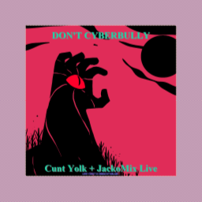

Don't Cyberbully is the title of a 2018 song recorded live by Cunt Yolk and Jackomix on The unofficial Neocities' Discord server. The song was made-up on the spot by Jackomix who is heard rapping, while Cunt Yolk can be heard playing his guitar.  The audio for the track was recorded by Elementz. However, the audio is quite poor quality-wise at times (not being able to understand Jackomix's singing, hearing the Discord notification noise, background noise etc.), and so it sounds like a bootleg track and not an official song. What also didn't help with the quality is that Cunt Yolk and Jackomix are in two septate continents (Eurasia and the Americas respectably).
Cunt Yolk was also not aware that his audio setup at the time did not allow people on the recieving end of calls to hear his guitar effects (i.e. distortion, reverb, delay), so what was captured on the recording was merely the raw guitar signal that, to say the least, sounds horrible.
As usual, the cover was made by OwlMan (who has made most of the Cunt Yolk artwork), who used art made by Kalgree titled "Summoning".
The audio was recorded on the 2nd of June 2018. This would be the first time that someone else sang on a Cunt Yolk song, and the second time that someone else was featured on one.
A few days later, Cunt Yolk released a MIDI rendition of the song. Soon after, Cunt Yolk also released a "studio" re-recording of the song that included double-tracked, distorted guitars and a choir in the background, although the vocals are missing. They are both available on the Internet Archive.
This page was last updated: 2019-03-05 @ 04:28
In total this page has had 2 updates since it was uploaded.